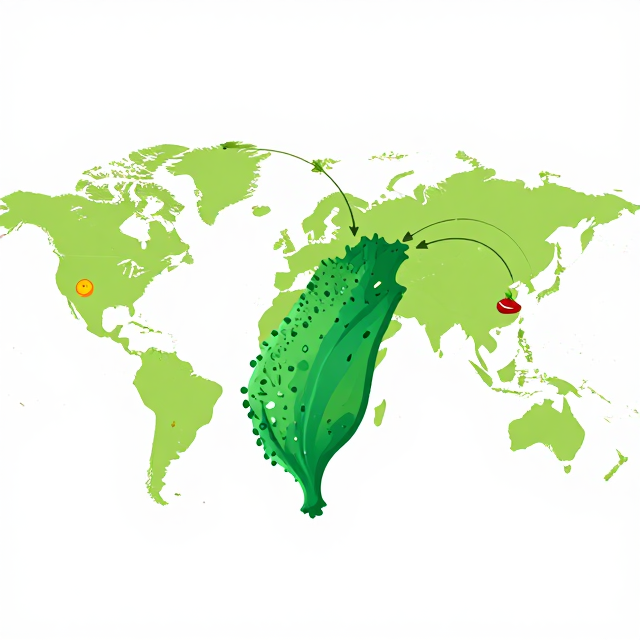
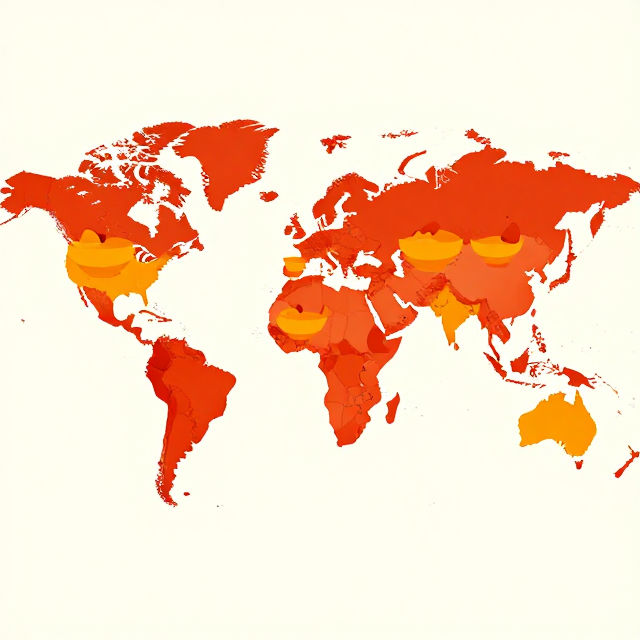
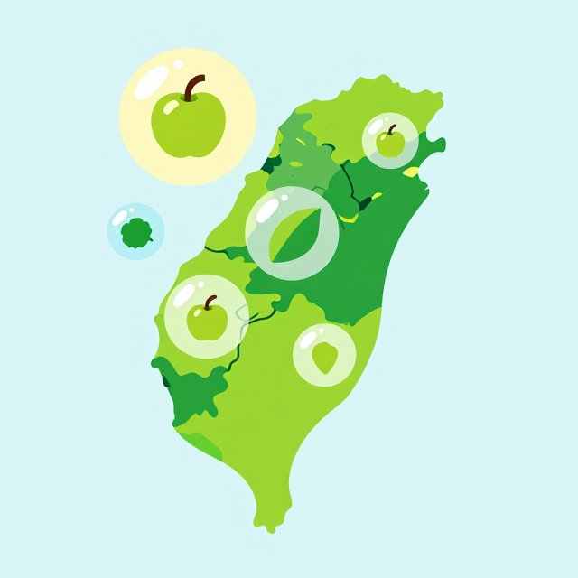

餐盤裡的地球
永續飲食:對地球好,也對你好
今天這一頓飯,藏了三個大問題
把這三個問題記住,下課前一起回答!
餐盤上的地球
我們吃的每一口,都在改變地球
每 3 噸暖化氣體,就有 1 噸來自餐桌
提問:糧食系統排放為什麼這麼大?(從種田、養牛、運輸、烹煮到丟棄,每一步都會排放)
1 公斤牛肉 = 一台小汽車跑 150 公里
1 公斤牛肉
約排放 36 公斤 CO₂e
1 公斤豆類
約排放 不到 1 公斤 CO₂e
差距超過 40 倍!一週幾天用豆類、蛋、豆腐取代紅肉,就是有力的減碳行動。
台灣每吃 10 口飯,7 口從國外來

提問:你最近吃的水果是從哪裡來的?多選在地當季,既新鮮又能幫助台灣農民。
低碳飲食六原則
參考教育部 CCE 教案《Heal the world》(0149)
什麼才是「好」的一餐?
永續飲食 = 環境 + 健康 + 公平 + 文化
永續飲食的四大好處
可獲得
大家都買得到、付得起
安全
乾淨、無農藥殘留
公平
不論貧富都吃得到
文化適宜
尊重宗教與家庭飲食
提問:你覺得學校午餐做到哪幾項?
每天 5 份蔬果,健康加分
EAT-Lancet:每年可救 1,100 萬人
不是要不吃肉,而是「少一點紅肉、多一點植物」。
世界上,還有人吃不到飯

同理圈練習:「如果我是……,最希望被提供的一餐是?」
戰勝廚餘大魔王
把吃不完的食物,變回大地的養分
全球每年丟掉 10 億公噸食物
提問:是什麼讓這麼多食物被浪費?(過度購買、賣相不佳、保存不當、份量太大)
台灣每人每年丟掉 96 公斤廚餘

提問:你覺得午餐最常剩下什麼?
廚餘桶的秘密:來秤一秤
參照教育部 CCE 教案《廚餘桶的秘密》(0168),分組到午餐廚餘桶實地調查。
| 分類 | 常見項目 | 本班重量(公斤) |
|---|---|---|
| 吃不完的飯菜 | 白飯、青菜、肉類 | |
| 骨頭與果皮 | 魚骨、果皮、菜根 | |
| 包裝廢棄物 | 調味包、餐具袋、塑膠膜 |
觀察題:哪一類最多?可以怎麼減量?
包裝大挑戰
可回收
- 單一材質塑膠瓶
- 鋁罐、紙盒
- 乾淨的玻璃瓶
一般垃圾
- 沾油的餐盒
- 果汁吸管袋
- 食物殘渣袋
複合材質(難回收)
- 洋芋片鋁箔袋
- 軟糖夾鏈包
- 泡麵調味料包
替代方案:自備水壺、餐盒、環保袋,直接從「不產生」開始。
光盤 30 天挑戰
把每天午餐光盤的天數打勾,看誰能連續 30 天!
| 週次 | 一 | 二 | 三 | 四 | 五 | 本週光盤天數 |
|---|---|---|---|---|---|---|
| 第 1 週 | ||||||
| 第 2 週 | ||||||
| 第 3 週 | ||||||
| 第 4 週 |
我的光盤三招:① 飯量適合自己 ② 不挑食 ③ 吃完最後一口
我的永續餐桌提案
把學到的,變成下一頓飯的選擇
設計你的永續便當
用在地當季食材,至少一半是蔬果,只用一點肉或改用豆類。
| 項目 | 食材 | 產地(在地/進口) | 當季嗎? | 植物或動物? |
|---|---|---|---|---|
| 主食 | ||||
| 蔬菜 | ||||
| 蛋白質 | ||||
| 水果 |
我可以做什麼?
從個人到社群,有哪些行動?
家 庭
- 挑在地、選當季食材
- 採買買得剛剛好
- 每週一次蔬食日
- 自備水壺與餐盒
學 校
- 光盤挑戰打卡
- 校園菜園當季蔬菜
- 廚餘三桶分流
- 減包裝午餐
社 區
- 支持在地小農與市集
- 即期食品捐食物銀行
- 邀農夫到校分享
- 參與家庭永續餐桌週
給家人的一張便條
請寫下你下次採買時想建議家人的 3 個永續小改變。
三個關鍵字,一起記住
支持台灣農民
少紅肉多植物
吃完最後一口
你不渺小。
每做一個對地球好的選擇,都是投給未來的一張票。